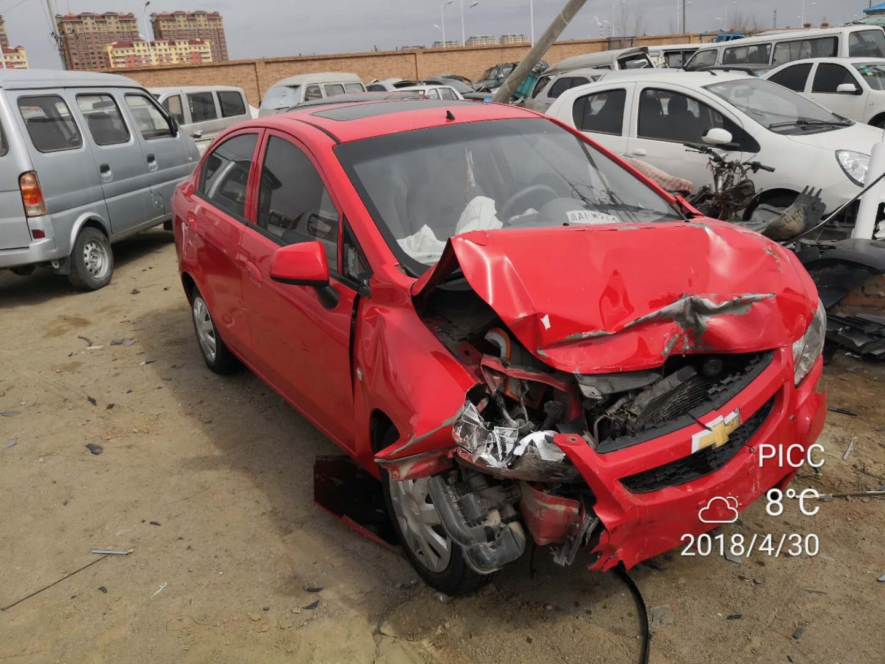
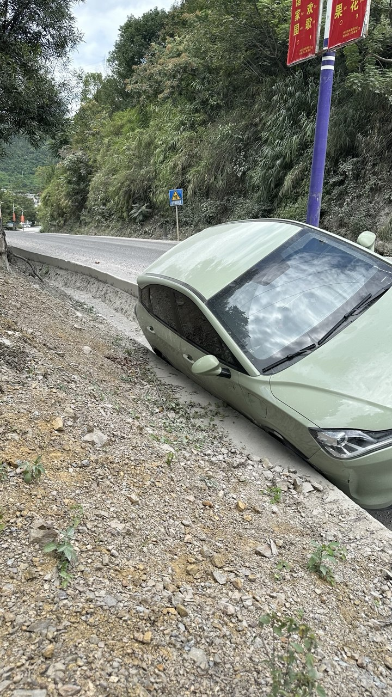
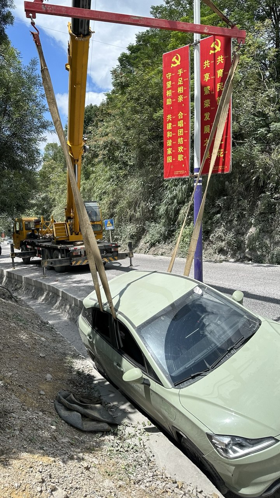
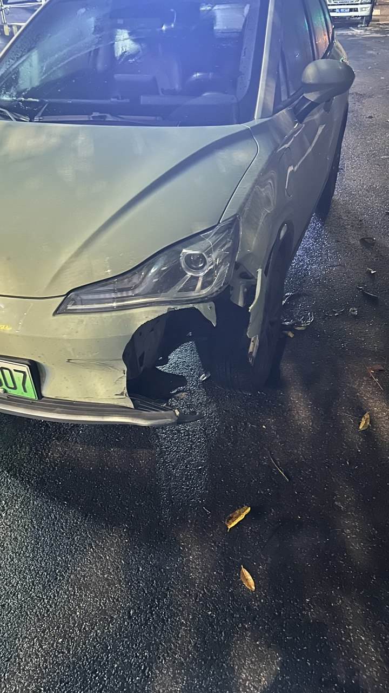
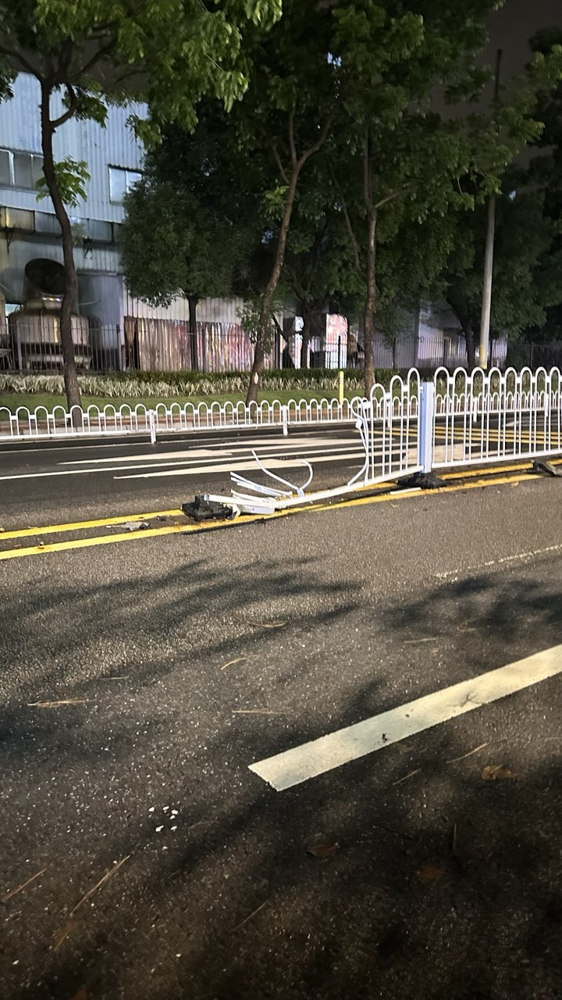

Accidentes de Auto en Mi Vida | Original, traducido por IA
He tenido algunos accidentes de coche en mi vida. El más grave ocurrió en abril de 2018, justo un mes después de obtener mi licencia de conducir. Viajaba a Xilinhot, en Mongolia Interior. Iba conduciendo a unos 100 km/h con mi esposa. Después de salir de la autopista en una cabina de peaje, que no tenía una curva y era recta, pensé que todavía estaba en la autopista. Así que no reduje la velocidad en absoluto. De repente, apareció un cruce.
Mi coche chocó contra un coche blanco que acababa de girar. Mi coche fue empujado unos 10 metros. Todo se volvió caótico. El otro coche fue empujado contra el separador de la carretera. Yo estaba bien porque llevaba el cinturón de seguridad y no tuve ninguna lesión. Sin embargo, mi esposa tuvo problemas en el hombro.
Podía ver que el otro coche estaba muy golpeado. Fui a comprobar la situación. Tenía miedo de haber herido gravemente a alguien. Al revisar, encontré a un conductor masculino solo en el coche, con la cabeza sangrando. Llamé a los servicios médicos de emergencia y a la policía.
En realidad, tuvimos suerte. Antes de chocar con su coche, había un gran camión delante de nosotros. Nos alegró que este camión fuera rápido y evitara nuestro coche. De lo contrario, nuestro coche podría haber quedado debajo del camión, lo que habría sido muy peligroso para nosotros.
Más tarde, la compañía de seguros de mi coche me ayudó. Había comprado el coche de segunda mano solo dos semanas antes del accidente, así que el seguro estaba a nombre del dueño original del coche.
La policía descubrió que el conductor del coche blanco había consumido una cantidad significativa de alcohol. Como resultado, al día siguiente, la policía decidió responsabilizar a ambos por igual, dividiendo la culpa cincuenta y cincuenta.
Este accidente dejó un recuerdo permanente en mí. Los accidentes posteriores que he tenido han sido triviales. Me alegro de que los accidentes de coche en mi vida no me hayan matado. Registro esto aquí para desear menos accidentes de coche en el futuro, y espero lo mismo para ti.

Fuente: Captura propia

Fuente: Captura propia

Fuente: Captura propia

Fuente: Captura propia

Fuente: Captura propia